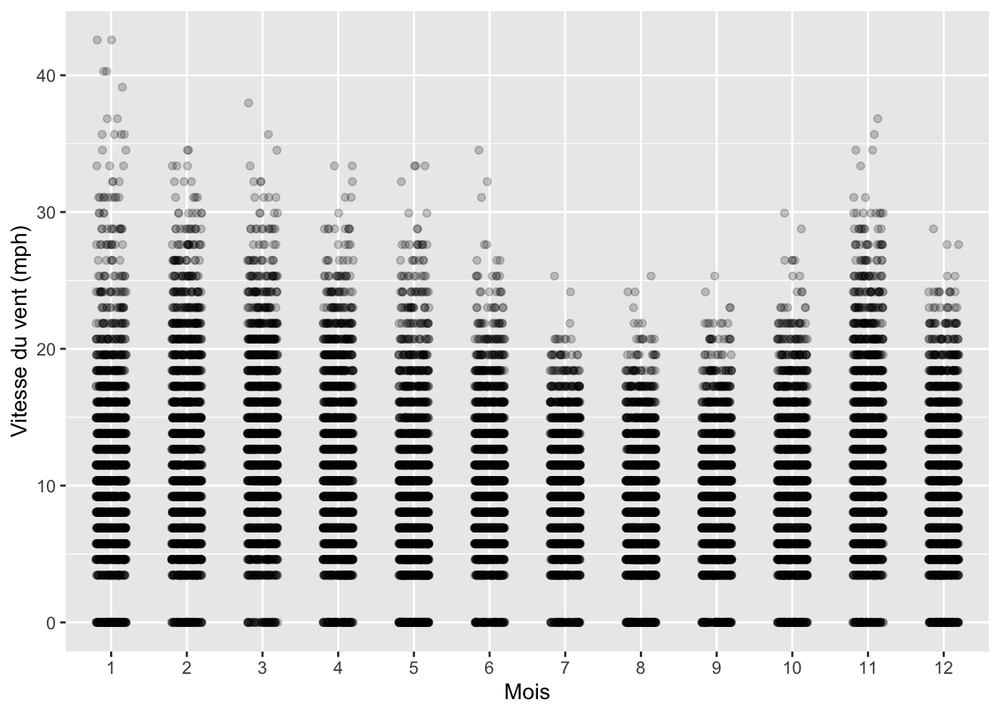
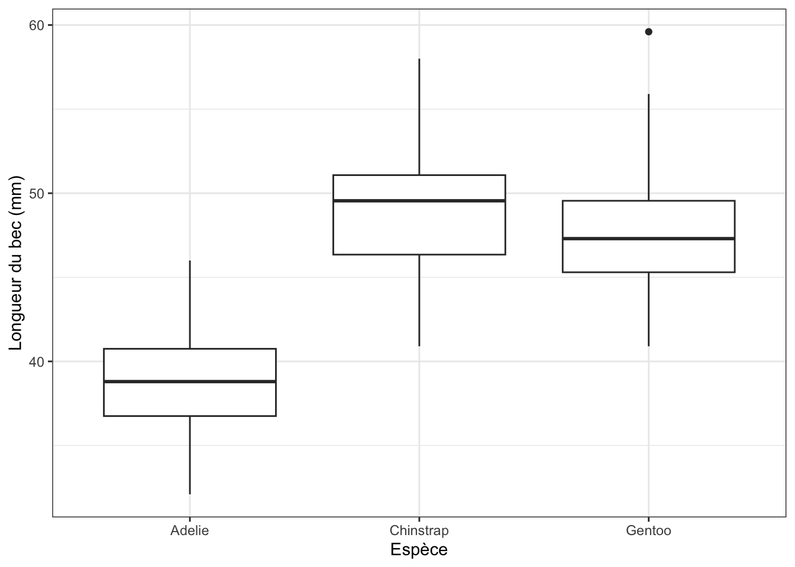
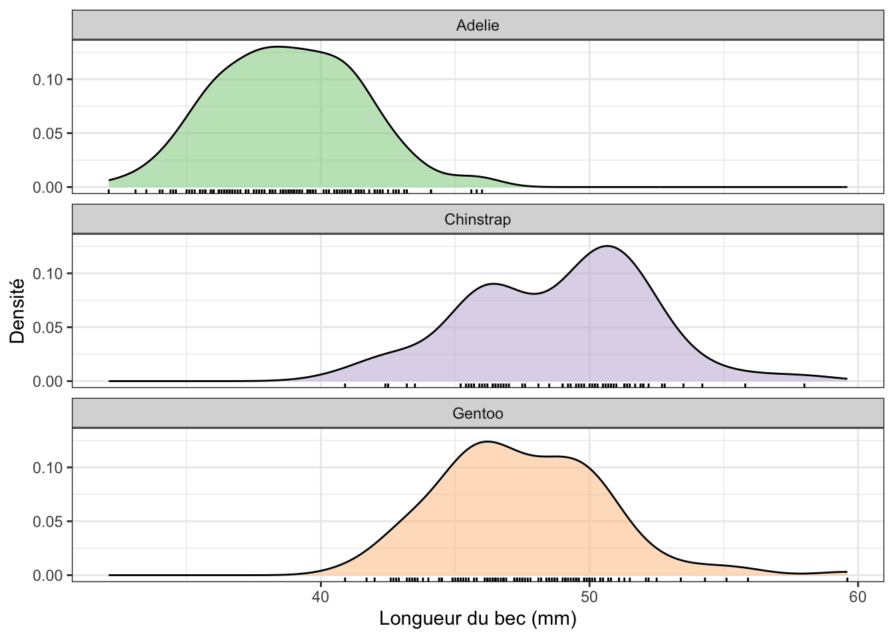
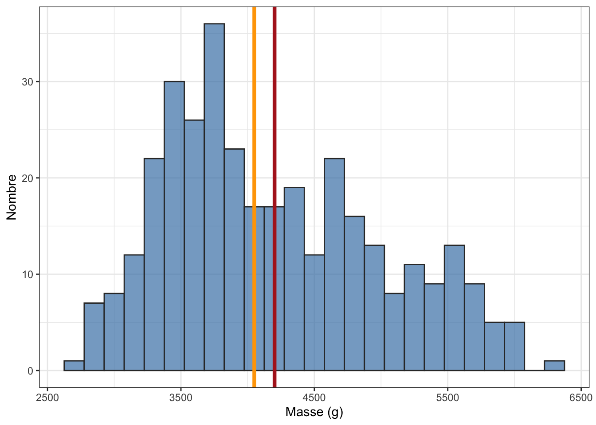
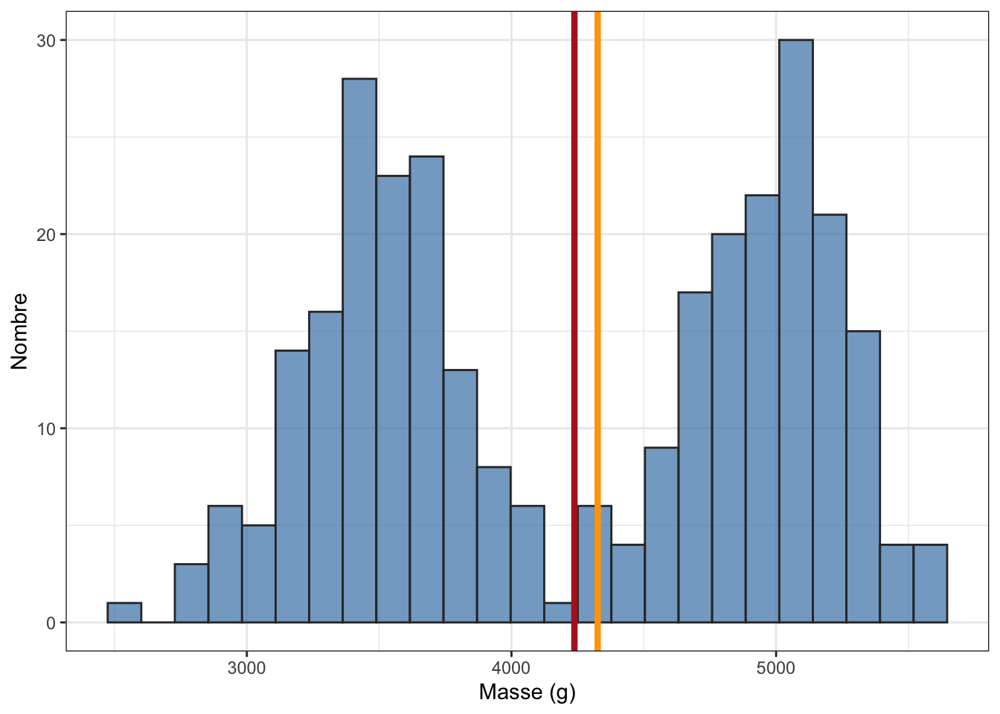

library(tidyverse)
library(skimr)
library(palmerpenguins)
library(nycflights13)6.1 Pré-requis
La première étape de toute analyse de données est l’exploration. Avant de se lancer dans des tests statistiques et des procédures complexes, et à supposer que les données dont vous disposez sont déjà dans un format approprié, il est toujours très utile :
d’explorer visuellement les données dont on dispose en faisant des graphiques nombreux et variés, afin de comprendre, notamment quelle est la distribution des variables numériques, quelles sont les catégories les plus représentées pour les variables qualitatives (ou facteurs), quelles sont les relations les plus marquantes entre variables numériques et/ou catégorielles, etc. Vous avez appris au Chapitre 3 comment produire toutes sortes de graphiques avec le package
ggplot2. Il va maintenant falloir vous poser la question du choix des graphiques à produire du point de vue de l’exploration statistique de données inconnues.d’explorer les données en calculant des indices de statistiques descriptives. Ces indices relèvent en général de 2 catégories : les indices de position (e.g. moyennes, médianes, quartiles…) et les indices de dispersion (e.g. variance, écart-type, intervalle inter-quartiles…). Nous avons déjà vu comment utiliser la fonction
summarise()et son argument.bypour calculer des moyennes ou des effectifs pour plusieurs sous-groupes de nos jeux de données. Dans ce chapitre, nous allons aller plus loin, et nous découvrirons d’une part comment obtenir d’autres indices statistiques pertinents, et d’autres fonctions encore plus utiles quesummarise().
Nous verrons dans le Chapitre 7 comment calculer des indices d’incertitude (Section 7.4 et Section 7.5). Attention, il ne faudra pas confondre indices de dispersion et indices d’incertitude. Et enfin, avant de passer aux tests statistiques, nous verrons comment visualiser dispersion et incertitude au Chapitre 8.
Afin d’explorer ces questions, nous aurons besoin des packages suivants :
Comme vous le savez maintenant, les packages du tidyverse (Wickham 2023) permettent de manipuler facilement des tableaux de données et de réaliser des graphiques. Charger le tidyverse permet d’accéder, entre autres, aux packages readr (Wickham, Hester, et Bryan 2023), pour importer facilement des fichiers .csv au format tibble, tidyr (Wickham, Vaughan, et Girlich 2023) et dplyr (Wickham, François, et al. 2023) pour manipuler des tableaux de données ou encore ggplot2 (Wickham, Chang, et al. 2023) pour produire des graphiques. Le package skimr (Waring et al. 2022) permet de calculer des résumés de données très informatifs. Les packages palmerpenguins (Horst, Hill, et Gorman 2022) et nycflights13 (Wickham 2021) fournissent des jeux de données qui seront faciles à manipuler pour illustrer ce chapitre (et les suivants).
Important
Si vous avez déjà installé le tidyverse ou dplyr avant le printemps 2023, ré-installez dplyr avec install.packages("dplyr"). Ce package a en effet été mis à jour tout récemment, et nous aurons besoin de sa toute dernière version (v1.1.0) pour utiliser certaines fonctions. Chargez-le ensuite en mémoire avec library(dplyr).
Attention
Pensez à installer tous les packages listés ci-dessous avant de les charger en mémoire si vous ne l’avez pas déjà fait. Si vous ne savez plus comment faire, consultez d’urgence la Section 1.4
Pour travailler dans de bonnes conditions, et puisque nous abordons maintenant les statistiques à proprement parler, je vous conseille de créez un nouveau script dans le même dossier que votre Rproject. Là encore, si vous ne savez plus comment faire consultez la Section 1.3.
6.2 Créer des résumés avec la fonction summarise()
Comme nous l’avons vu au semestre 3, le package dplyr fournit plusieurs fonctions qui portent le nom de verbes et qui permettent d’effectuer des manipulations simples mais qui peuvent devenir très puissantes lorsqu’on les combine. Nous avons ainsi vu les fonctions suivantes :
select(): pour sélectionner ou exclure certaines colonnes (variables) d’un tableau de donnéesfilter(): pour trier des lignes d’un tableau de données selon des critères ou conditions choisis par l’utilisateurmutate(): pour transformer des variables existantes, ou pour créer de nouvelles colonnes dans un tableau de donnéesarrange(): pour trier des tableaux de données par ordre croissants ou décroissants
Si vous ne savez plus comment utiliser ces fonctions, relisez le chapitre 4 du livre en ligne de Biométrie du semestre 3.
À ces 4 verbes, nous allons ici ajouter :
summarise(): pour créer des résumés de données simples à partir des colonnes d’un tableaureframe(): pour créer des résumés de données plus élaborés à partir des colonnes d’un tableaucount(): pour compter le nombre d’observations pour chaque niveau d’un facteur (ou modalité d’une variable catégorielle)group_by(): pour effectuer des opérations pour chaque niveau d’un facteur (ou modalité d’une variable catégorielle)
Cette dernière fonction group_by() a été rendue presque obsolète par une mise à jour récente du package dplyr qui introduit un nouvel argument pour plusieurs fonctions, dont summarise() : l’argument .by. Un peu comme group-by(), ce nouvel argument permet d’effectuer des opérations pour chaque niveau d’un facteur (ou modalité d’une variable catégorielle). À notre niveau, les différences entre la fonction group_by() et l’argument .by ne sont pas importantes. Nous utiliserons donc de préférence la notation la plus simple, celle de l’argument .by.
Voyons comment on utilise ces fonctions pour calculer des indices de statistiques descriptives pour les variables du tableau penguins :
# affichage du tableau
penguins# A tibble: 344 × 8
species island bill_length_mm bill_depth_mm flipper_length_mm body_mass_g
<fct> <fct> <dbl> <dbl> <int> <int>
1 Adelie Torgersen 39.1 18.7 181 3750
2 Adelie Torgersen 39.5 17.4 186 3800
3 Adelie Torgersen 40.3 18 195 3250
4 Adelie Torgersen NA NA NA NA
5 Adelie Torgersen 36.7 19.3 193 3450
6 Adelie Torgersen 39.3 20.6 190 3650
7 Adelie Torgersen 38.9 17.8 181 3625
8 Adelie Torgersen 39.2 19.6 195 4675
9 Adelie Torgersen 34.1 18.1 193 3475
10 Adelie Torgersen 42 20.2 190 4250
# ℹ 334 more rows
# ℹ 2 more variables: sex <fct>, year <int>6.2.1 Principe de la fonction summarise()


summarise() tiré de la ‘cheatsheet’ de dplyr et tidyrLa Figure 6.1 ci-dessus indique comment travaille la fonction summarise() : elle prend plusieurs valeurs (potentiellement, un très grand nombre) et les réduit à une unique valeur qui les résume. La valeur qui résume les données est choisie par l’utilisateur. Il peut s’agir par exemple d’un calcul de moyenne, de quartile ou de variance, il peut s’agir de calculer une somme, ou d’extraire la valeur maximale ou minimale, ou encore, il peut tout simplement s’agir de déterminer un nombre d’observations. Mais le fonctionnement est toujours le même : la fonction summarise() ne renvoie qu’une unique valeur pour une variable donnée (ou pour chaque modalité d’une variable catégorielle).
Ainsi, pour connaître la moyenne de la longueur du bec des manchots de l’île de Palmer, il suffit d’utiliser le tableau penguins du package palmerpenguins et sa variable bill_length_mm que nous avons déjà utilisée au semestre 3 :
penguins %>%
summarise(moyenne = mean(bill_length_mm))# A tibble: 1 × 1
moyenne
<dbl>
1 NALa fonction mean() permet de calculer une moyenne. Ici, la valeur retournée est NA car 2 individus n’ont pas été mesurés, et le tableau contient donc des valeurs manquantes :
penguins %>%
filter(is.na(bill_length_mm))# A tibble: 2 × 8
species island bill_length_mm bill_depth_mm flipper_length_mm body_mass_g
<fct> <fct> <dbl> <dbl> <int> <int>
1 Adelie Torgersen NA NA NA NA
2 Gentoo Biscoe NA NA NA NA
# ℹ 2 more variables: sex <fct>, year <int>Pour obtenir la valeur souhaitée, il faut indiquer à R d’exclure les valeurs manquantes lors du calcul de moyenne :
penguins %>%
summarise(moyenne = mean(bill_length_mm, na.rm = TRUE))# A tibble: 1 × 1
moyenne
<dbl>
1 43.9La longueur moyenne du bec des manchots (toutes espèces confondues) est donc de 43.9 millimètres.
De la même façon, on peut demander plusieurs calculs d’indices à la fois, par exemple la moyenne et l’écart-type (avec la fonction sd()) de la longueur des becs :
penguins %>%
summarise(moyenne = mean(bill_length_mm, na.rm = TRUE),
ecart_type = sd(bill_length_mm, na.rm = TRUE))# A tibble: 1 × 2
moyenne ecart_type
<dbl> <dbl>
1 43.9 5.46Ici, l’écart-type vaut 5.5 millimètres.
La fonction summarise() permet donc de calculer des indices statistiques variés, et permet aussi d’accéder à plusieurs variables à la fois. Par exemple. pour calculer les moyennes, médianes, minima et maxima des longueurs de nageoires et de masses corporelles, on peut procéder ainsi :
penguins %>%
summarise(moy_flip = mean(flipper_length_mm, na.rm = TRUE),
med_flip = median(flipper_length_mm, na.rm = TRUE),
min_flip = min(flipper_length_mm, na.rm = TRUE),
max_flip = max(flipper_length_mm, na.rm = TRUE),
moy_mass = mean(body_mass_g, na.rm = TRUE),
med_mass = median(body_mass_g, na.rm = TRUE),
min_mass = min(body_mass_g, na.rm = TRUE),
max_mass = max(body_mass_g, na.rm = TRUE))# A tibble: 1 × 8
moy_flip med_flip min_flip max_flip moy_mass med_mass min_mass max_mass
<dbl> <dbl> <int> <int> <dbl> <dbl> <int> <int>
1 201. 197 172 231 4202. 4050 2700 6300La fonction summarise() est donc très utile pour produire des résumés informatifs des données, mais nos exemples ne sont ici pas très pertinents puisque nous avons jusqu’ici calculé des indices sans distinguer les espèces. Si les 3 espèces de manchots ont des caractéristiques très différentes, calculer des moyennes toutes espèces confondues n’a pas de sens. Voyons maintenant comment obtenir ces même indices pour chaque espèce.
6.2.2 Intérêt de l’argument .by
La fonction summarise() devient particulièrement puissante lorsqu’on y ajoute l’argument .by :

.by travaillant de concert avec summarise(), tiré de la ‘cheatsheet’ de dplyr et tidyrComme son nom l’indique, l’argument .by permet de créer des sous-groupes dans un tableau, afin que le résumé des données soit calculé pour chacun des sous-groupes plutôt que sur l’ensemble du tableau. En ce sens, son fonctionnement est analogue à celui des facets de ggplot2 qui permettent de scinder les données d’un graphique en plusieurs sous-groupes.
Pour revenir à l’exemple de la longueur du bec des manchots, imaginons que nous souhaitions calculer les moyennes et les écart-types pour chacune des trois espèces. Voilà comment procéder :
penguins %>%
summarise(moyenne = mean(bill_length_mm, na.rm = TRUE),
ecart_type = sd(bill_length_mm, na.rm = TRUE),
.by = species)# A tibble: 3 × 3
species moyenne ecart_type
<fct> <dbl> <dbl>
1 Adelie 38.8 2.66
2 Gentoo 47.5 3.08
3 Chinstrap 48.8 3.34Ici, les étapes sont les suivantes :
- On prend le tableau
penguins, puis - On résume les données sous la forme de moyennes et d’écart-types
- On demande un calcul pour chaque modalité de la variable
species
Là où nous avions auparavant une seule valeur de moyenne et d’écart-type pour l’ensemble des individus du tableau de données, nous avons maintenant une valeur de moyenne et d’écart-type pour chaque modalité de la variable espèce. Puisque le facteur species contient 3 modalités (Adelie, Chinstrap et Gentoo), le résumé des données contient maintenant 3 lignes.
Cette syntaxe très simple est presque équivalente à celle de la fonction group_by() :
penguins %>%
group_by(species) %>%
summarise(moyenne = mean(bill_length_mm, na.rm = TRUE),
ecart_type = sd(bill_length_mm, na.rm = TRUE))# A tibble: 3 × 3
species moyenne ecart_type
<fct> <dbl> <dbl>
1 Adelie 38.8 2.66
2 Chinstrap 48.8 3.34
3 Gentoo 47.5 3.08Les valeurs obtenues sont les mêmes, mais d’une part, les commandes sont fournies avec une syntaxe et dans un ordre différents :
- On prend le tableau
penguins, puis - On groupe les données par espèce, puis
- On résume les données sous la forme de moyennes et d’écart-types
Et l’objet obtenu au final n’est pas strictement identique : avec la fonction group_by(), et dans certaines situations, la tibble obtenu conserve l’information du regroupement effectué, ce qui peut être utile dans certaines situations, mais pose parfois problème et cause l’affichage de messages d’avertissements dans la console. Ce comportement n’est pas observé avec l’argument .by qui ne groupe les données qu’au moment du calcul des indices dans la fonction summarise() et n’en conserve pas la trace ensuite. C’est la raison pour laquelle nous privilégierons cette méthode.
Pour aller plus loin, ajoutons à ce résumé 2 variables supplémentaires : le nombre de mesures et l’erreur standard (notée \(se\)), qui peut être calculée de la façon suivante :
\[se \approx \frac{s}{\sqrt{n}}\]
avec \(s\), l’écart-type de l’échantillon et \(n\), la taille de l’échantillon (plus d’informations sur cette statistique très importante dans la Chapitre 7). Nous allons donc calculer ici ces résumés, et nous donnerons un nom au tableau créé pour pouvoir ré-utiliser ces statistiques descriptives :
stats_esp <- penguins %>%
summarise(moyenne = mean(bill_length_mm, na.rm = TRUE),
ecart_type = sd(bill_length_mm, na.rm = TRUE),
nb_obs = n(),
erreur_std = ecart_type / sqrt(nb_obs),
.by = species)
stats_esp# A tibble: 3 × 5
species moyenne ecart_type nb_obs erreur_std
<fct> <dbl> <dbl> <int> <dbl>
1 Adelie 38.8 2.66 152 0.216
2 Gentoo 47.5 3.08 124 0.277
3 Chinstrap 48.8 3.34 68 0.405Vous constatez ici que nous avons 4 statistiques descriptives pour chaque espèce. Deux choses sont importantes à retenir ici :
- on peut obtenir le nombre d’observations dans chaque sous-groupe d’un tableau groupé en utilisant la fonction
n(). Cette fonction n’a besoin d’aucun argument : elle détermine automatiquement la taille des groupes créés par.by(ou par la fonctiongroup_by()). - on peut créer de nouvelles variables en utilisant le nom de variables créées auparavant. Ainsi, nous avons créé la variable
erreur_stden utilisant deux variables créées au préalable :ecart-typeetnb_obs
6.2.3 Grouper par plus d’une variable
Jusqu’ici, nous avons groupé les données par espèce. Il est tout à fait possible de grouper les données par plus d’une variable, par exemple, par espèce et par sexe :
stats_esp_sex <- penguins %>%
summarise(moyenne = mean(bill_length_mm, na.rm = TRUE),
ecart_type = sd(bill_length_mm, na.rm = TRUE),
nb_obs = n(),
erreur_std = ecart_type / sqrt(nb_obs),
.by = c(species, sex))
stats_esp_sex# A tibble: 8 × 6
species sex moyenne ecart_type nb_obs erreur_std
<fct> <fct> <dbl> <dbl> <int> <dbl>
1 Adelie male 40.4 2.28 73 0.267
2 Adelie female 37.3 2.03 73 0.237
3 Adelie <NA> 37.8 2.80 6 1.14
4 Gentoo female 45.6 2.05 58 0.269
5 Gentoo male 49.5 2.72 61 0.348
6 Gentoo <NA> 45.6 1.37 5 0.615
7 Chinstrap female 46.6 3.11 34 0.533
8 Chinstrap male 51.1 1.56 34 0.268En plus de la variable species, la tableau stats_esp_sex contient une variable sex. Les statistiques que nous avons calculées plus tôt sont maintenant disponibles pour chaque espèce et chaque sexe. D’ailleurs, puisque le sexe de certains individus est inconnu, nous avons également des lignes pour lesquelles le sexe affiché est NA. Pour les éliminer, il suffit de retirer les lignes du tableau pour lesquelles le sexe des individus est inconnu avant de recalculer les mêmes indices :
stats_esp_sex2 <- penguins %>%
filter(!is.na(sex)) %>%
summarise(moyenne = mean(bill_length_mm, na.rm = TRUE),
ecart_type = sd(bill_length_mm, na.rm = TRUE),
nb_obs = n(),
erreur_std = ecart_type / sqrt(nb_obs),
.by = c(species, sex))
stats_esp_sex2# A tibble: 6 × 6
species sex moyenne ecart_type nb_obs erreur_std
<fct> <fct> <dbl> <dbl> <int> <dbl>
1 Adelie male 40.4 2.28 73 0.267
2 Adelie female 37.3 2.03 73 0.237
3 Gentoo female 45.6 2.05 58 0.269
4 Gentoo male 49.5 2.72 61 0.348
5 Chinstrap female 46.6 3.11 34 0.533
6 Chinstrap male 51.1 1.56 34 0.268Si vous ne comprenez pas la commande filter(!is.na(sex)), je vous encourage vivement à consulter cette section du livre en ligne de Biométrie du semestre 3.
Enfin, lorsque nous groupons par plusieurs variables, il peut être utile de présenter les résultats sous la forme d’un tableau large (grâce à la fonction pivot_wider()) pour l’intégration dans un rapport par exemple. La fonction pivot_wider() permet de passer d’un tableau qui possède ce format :
penguins %>%
filter(!is.na(sex)) %>%
summarise(moyenne = mean(bill_length_mm, na.rm = TRUE),
.by = c(species, sex))# A tibble: 6 × 3
species sex moyenne
<fct> <fct> <dbl>
1 Adelie male 40.4
2 Adelie female 37.3
3 Gentoo female 45.6
4 Gentoo male 49.5
5 Chinstrap female 46.6
6 Chinstrap male 51.1à un tableau sous ce format :
penguins %>%
filter(!is.na(sex)) %>%
summarise(moyenne = mean(bill_length_mm, na.rm = TRUE),
.by = c(species, sex)) %>%
pivot_wider(names_from = sex,
values_from = moyenne)# A tibble: 3 × 3
species male female
<fct> <dbl> <dbl>
1 Adelie 40.4 37.3
2 Gentoo 49.5 45.6
3 Chinstrap 51.1 46.6Sous cette forme, les données ne sont plus “rangées”, c’est à dire que nous n’avons plus une observation par ligne et une variable par colonne. En effet ici, la variable sex est maintenant “étalée” dans 2 colonnes distinctes : chaque modalité du facteur de départ (female et male) est utilisée en tant que titre de nouvelles colonnes, et la variable moyenne est répartie dans deux colonnes. Ce format de tableau n’est pas idéal pour les statistiques ou les représentations graphiques, mais il est plus synthétique, et donc plus facile à inclure dans un rapport ou un compte-rendu.
6.2.4 Un raccourci pratique pour compter des effectifs
Il est extrêmement fréquent d’avoir à grouper des données en fonction d’une variable catégorielle puis d’avoir à compter le nombre d’observations de chaque modalité avec n() :
penguins %>%
summarise(effectif = n(),
.by = species)# A tibble: 3 × 2
species effectif
<fct> <int>
1 Adelie 152
2 Gentoo 124
3 Chinstrap 68ou encore :
penguins %>%
group_by(species) %>%
summarise(effectif = n())# A tibble: 3 × 2
species effectif
<fct> <int>
1 Adelie 152
2 Chinstrap 68
3 Gentoo 124Ces deux opérations sont tellement fréquentes (regrouper puis compter) que le package dplyr nous fournit un raccourci : la fonction count().
Le code ci-dessus est équivalent à celui-ci :
penguins %>%
count(species)# A tibble: 3 × 2
species n
<fct> <int>
1 Adelie 152
2 Chinstrap 68
3 Gentoo 124Notez qu’avec la fonction count(), la colonne qui contient les comptages s’appelle toujours n par défaut. Comme avec .by et group_by(), il est bien sûr possible d’utiliser count() avec plusieurs variables :
penguins %>%
count(species, sex)# A tibble: 8 × 3
species sex n
<fct> <fct> <int>
1 Adelie female 73
2 Adelie male 73
3 Adelie <NA> 6
4 Chinstrap female 34
5 Chinstrap male 34
6 Gentoo female 58
7 Gentoo male 61
8 Gentoo <NA> 5penguins %>%
filter(!is.na(sex)) %>%
count(species, sex)# A tibble: 6 × 3
species sex n
<fct> <fct> <int>
1 Adelie female 73
2 Adelie male 73
3 Chinstrap female 34
4 Chinstrap male 34
5 Gentoo female 58
6 Gentoo male 61Et il est évidemment possible de présenter le résultats sous un format de tableau large :
penguins %>%
filter(!is.na(sex)) %>%
count(species, sex) %>%
pivot_wider(names_from = sex,
values_from = n)# A tibble: 3 × 3
species female male
<fct> <int> <int>
1 Adelie 73 73
2 Chinstrap 34 34
3 Gentoo 58 61Vous connaissez maintenant plusieurs méthodes pour calculer à la main des statistiques descriptives pour des variables entières, ou pour des sous-groupes de lignes (par espèce, par sexe, par sexe et par espèce…). Globalement, toutes les fonctions de R qui prennent une série de chiffres en guise d’argument, et qui renvoient une valeur unique, peuvent être utilisées avec la fonction summarise(). En particulier, vous pouvez utiliser les fonctions suivantes pour faire des analyses exploratoires :
mean(): calcul de la moyennemedian(): calcul de la médianemin(): affichage de la valeur minimalemax(): affichage de la valeur minimalen_distinct(): calcul du nombre de valeurs différentesn(): calcul du nombre d’observationsvar(): calcul de la variancesd(): calcul de l’écart-typeIQR(): calcul de l’intervalle inter-quartiles
Et la liste n’est bien sûr pas exhaustive
6.2.5 Exercices
- Avec le tableau
diamondsdu packageggplot2, faites un tableau indiquant combien de diamants de chaque couleur on dispose. Vous devriez obtenir le tableau suivant :
# A tibble: 7 × 2
color n
<ord> <int>
1 D 6775
2 E 9797
3 F 9542
4 G 11292
5 H 8304
6 I 5422
7 J 2808Examinez le tableau
weatherdu packagenycflights13et lisez son fichier d’aide pour comprendre à quoi correspondent les données et comment elles ont été acquises.À partir du tableau
weatherfaites un tableau indiquant les vitesses de vents minimales, maximales et moyennes, enregistrées chaque mois dans chaque aéroport de New York. Indice : les 3 aéroports de New York sont Newark, LaGuardia Airport et John F. Kennedy, notés respectivementEWR,LGAetJFKdans la variableorigin. Votre tableau devrait ressembler à ceci :
# A tibble: 36 × 5
origin month max_wind min_wind moy_wind
<chr> <int> <dbl> <dbl> <dbl>
1 EWR 1 42.6 0 9.87
2 EWR 2 1048. 0 12.2
3 EWR 3 29.9 0 11.6
4 EWR 4 25.3 0 9.63
5 EWR 5 33.4 0 8.49
6 EWR 6 34.5 0 9.55
7 EWR 7 20.7 0 9.15
8 EWR 8 21.9 0 7.62
9 EWR 9 23.0 0 8.03
10 EWR 10 26.5 0 8.32
# ℹ 26 more rows- Sachant que les vitesses du vent sont exprimées en miles par heure, certaines valeurs sont-elles surprenantes ? À l’aide de la fonction
filter(), éliminez la ou les valeurs aberrantes. Vous devriez obtenir ce tableau :
# A tibble: 36 × 5
origin month max_wind min_wind moy_wind
<chr> <int> <dbl> <dbl> <dbl>
1 EWR 1 42.6 0 9.87
2 EWR 2 31.1 0 10.7
3 EWR 3 29.9 0 11.6
4 EWR 4 25.3 0 9.63
5 EWR 5 33.4 0 8.49
6 EWR 6 34.5 0 9.55
7 EWR 7 20.7 0 9.15
8 EWR 8 21.9 0 7.62
9 EWR 9 23.0 0 8.03
10 EWR 10 26.5 0 8.32
# ℹ 26 more rows- En utilisant les données de vitesse de vent du tableau
weather, produisez le graphique suivant :

Indications :
- les vitesses de vent aberrantes ont été éliminées grâce à la fonction
filter() - la fonction
geom_jitter()a été utilisée avec l’argumentheight = 0 - la transparence des points est fixée à
0.2
- À votre avis :
- pourquoi les points sont-ils organisés en bandes horizontales ?
- pourquoi n’y a-t-il jamais de vent entre 0 et environ 3 miles à l’heure (mph) ?
- Sachant qu’en divisant des mph par 1.151 on obtient des vitesses en nœuds, que nous apprend cette commande :
sort(unique(weather$wind_speed)) / 1.151 [1] 0.000000 2.999427 3.999235 4.999044 5.998853 6.998662
[7] 7.998471 8.998280 9.998089 10.997897 11.997706 12.997515
[13] 13.997324 14.997133 15.996942 16.996751 17.996560 18.996368
[19] 19.996177 20.995986 21.995795 22.995604 23.995413 24.995222
[25] 25.995030 26.994839 27.994648 28.994457 29.994266 30.994075
[31] 31.993884 32.993692 33.993501 34.993310 36.992928 910.8258736.3 Les fonctions pivot_wider() et pivot_longer()
6.3.1 Du format long au format large : pivot_wider()
Comme nous venons de le voir, la fonction pivot_wider() permet de passer d’un tableau au format long à un tableau au format large, qui contient donc moins de lignes mais plus de colonnes.
Par exemple, lorsque l’on dispose d’un tableau contenant un résumé de données pour plusieurs catégories et sous-catégories, il peut être utile de le transformer au format large pour l’intégrer dans un rapport (la présentation en est ainsi plus synthétique) ou pour faire certains types de graphiques. Par exemple, avec ce tableau de résumé de données :
resum <- penguins %>%
filter(!is.na(sex)) %>%
count(species, sex)
resum# A tibble: 6 × 3
species sex n
<fct> <fct> <int>
1 Adelie female 73
2 Adelie male 73
3 Chinstrap female 34
4 Chinstrap male 34
5 Gentoo female 58
6 Gentoo male 61La présentation au format large serait plus appropriée dans un compte-rendu de TP :
resum_large1 <- resum %>%
pivot_wider(names_from = sex,
values_from = n)
resum_large1# A tibble: 3 × 3
species female male
<fct> <int> <int>
1 Adelie 73 73
2 Chinstrap 34 34
3 Gentoo 58 61L’argument names_from permet d’indiquer dans quelle colonne du tableau de départ aller cherche les noms de colonnes pour le nouveau tableau. Ici, on va chercher dans la colonne sex les noms de colonne du futur tableau (female et male). L’argument values_from permet d’indiquer dans quelle colonne du tableau de départ on souhaite aller chercher les valeurs que l’on souhaite mettre dans les nouvelles colonnes du futur tableau (ici, les effectifs stockés dans la colonne n).
Le terme “tableau large” peut-être trompeur car le tableau obtenu n’a pas forcément plus de colonnes que le tableau d’origine. En tous cas, il a toujours moins de lignes que le tableau de départ. Ici, resum avait 6 lignes et 3 colonnes, resum_large1 possède 3 lignes et 3 colonnes.
Si on souhaite avoir les espèces en colonnes et les sexes en lignes, on peut taper ceci :
resum_large2 <- resum %>%
pivot_wider(names_from = species,
values_from = n)
resum_large2# A tibble: 2 × 4
sex Adelie Chinstrap Gentoo
<fct> <int> <int> <int>
1 female 73 34 58
2 male 73 34 61Cette fois, resum_large2 possède 2 lignes et 4 colonnes. Le caractère “large” de ce nouveau tableau est ici bien apparent. Notez bien que ce sont toujours les mêmes données qui figurent dans ces 3 objets : seule la présentation change.
6.3.2 Du format large au format long : pivot_longer()
À l’inverse, on dispose parfois de données au format large alors que la plupart des fonctions graphiques et statistiques de R requièrent des données au format long, c’est à dire, des tableaux dans lesquels il y a une correspondance stricte entre colonnes et variables : une variable est contenue dans une seule colonne d’un tableau, et chaque ligne correspond à une unique observation. AInsi, le tableau resum_large2 n’est pas au format long :
resum_large2# A tibble: 2 × 4
sex Adelie Chinstrap Gentoo
<fct> <int> <int> <int>
1 female 73 34 58
2 male 73 34 61En effet, 3 de ses colonnes contiennent des données d’abondances qui pourraient (ou devraient) se trouver dans une unique colonne Abondance, et le titre de ces 3 colonnes devrait être les catégories d’une autre variable Espece. Pour transformer un tableau large en tableau long (qui contient donc toujours plus de lignes, et souvent moins de colonnes), on utilise pivot_longer(). Cette fonction possède 3 arguments :
cols: quelles sont les colonnes que l’on souhaite regroupernames_to: comment s’appellera la variable qui contiendra les anciens noms de colonnes du tableau largevalues_to: comment s’appellera la variable qui contiendra les données contenues dans les cellules du tableau large
Voilà un exemple :
resum_long <- resum_large2 %>%
pivot_longer(cols = c(Adelie, Chinstrap, Gentoo),
names_to = "Espece",
values_to = "Abondance")
resum_long# A tibble: 6 × 3
sex Espece Abondance
<fct> <chr> <int>
1 female Adelie 73
2 female Chinstrap 34
3 female Gentoo 58
4 male Adelie 73
5 male Chinstrap 34
6 male Gentoo 61Les 3 colonnes qui contenaient les abondance des 3 espèces de manchots ont été regroupées en 2 nouvelles colonnes dont les noms ont été précisés grâce à names_to et values_to.
Il est très fréquent d’avoir à passer d’un format large à un format long ou inversement. Il est donc important que vous appreniez à vous familiariser avec ces 2 fonctions.
les tableaux rangés
La plupart des fonctions du tidyverse supposent que les tableaux soient rangés (une colonne par variable, une ligne par observation) et qu’ils aient donc un format long. À l’inverse, pour présenter des tableaux dans un rapport ou pour certaines méthodes particulières, les données peuvent être présentées au format large. Les fonctions pivot_wider() et pivot_longer() sont complémentaires et permettent de passer d’un format à l’autre.
6.4 Créer des résumés avec la fonction reframe()
Comme nous venons de le voir, les calculs que nous pouvons faire grâce à la fonction summarise() impliquent des fonctions statistiques qui ne renvoient qu’une valeur à la fois lorsqu’on leur fournit une série de valeurs. Par exemple, si on dispose d’un vecteur numérique (les entiers compris entre 1 et 100 pour l’exemple) :
1:100 [1] 1 2 3 4 5 6 7 8 9 10 11 12 13 14 15 16 17 18
[19] 19 20 21 22 23 24 25 26 27 28 29 30 31 32 33 34 35 36
[37] 37 38 39 40 41 42 43 44 45 46 47 48 49 50 51 52 53 54
[55] 55 56 57 58 59 60 61 62 63 64 65 66 67 68 69 70 71 72
[73] 73 74 75 76 77 78 79 80 81 82 83 84 85 86 87 88 89 90
[91] 91 92 93 94 95 96 97 98 99 100la fonction mean() ne renvoie qu’une valeur, la moyenne des 100 valeurs contenues dans le vecteur :
mean(1:100)[1] 50.5De même pour les fonctions sd(), ou median(), ou toutes les autres fonctions listées à la fin de la Section 6.2.4 :
sd(1:100)[1] 29.01149median(1:100)[1] 50.5Il existe toutefois des fonctions qui renvoient plus d’une valeur à la fois. Par exemple, la fonction quantile(), renvoie par défaut 5 éléments :
- la valeur minimale contenue dans le vecteur (ou quantile 0%) : c’est la valeur la plus faible contenue dans la série de données
- le premier quartile du vecteur (Q1 ou quantile 25%) : c’est la valeur coupant l’échantillon en deux telle que 25% des observations du vecteur y sont inférieures
- la médiane du vecteur (Q2 ou quantile 50%) : c’est la valeur coupant l’échantillon en deux telle que 50% des observations du vecteur sont inférieures à cette valeur et 50% y sont supérieures
- le troisième quartile du vecteur (Q3 ou quantile 75%) : c’est la valeur coupant l’échantillon en deux telle que 75% des observations du vecteur y sont inférieures
- la valeur maximale contenue dans le vecteur (ou quantile 100%) : c’est la valeur la plus élevée contenue dans la série de données.
Par exemple, toujours avec le vecteur des entiers contenus entre 1 et 100 :
quantile(1:100) 0% 25% 50% 75% 100%
1.00 25.75 50.50 75.25 100.00 L’objet obtenu est un vecteur dont chaque élément porte un nom. Pour transformer cet objet en tibble, on utilise la fonction enframe() :
enframe(quantile(1:100))# A tibble: 5 × 2
name value
<chr> <dbl>
1 0% 1
2 25% 25.8
3 50% 50.5
4 75% 75.2
5 100% 100 Il peut être très utile de calculer ces différentes valeurs pour plusieurs variables à la fois, ou pour plusieurs sous-groupes d’un jeu de données. Le problème est que nous ne pouvons pas utiliser summarise() car la fonction quantile() ne renvoie pas qu’une unique valeur. par exemple, pour calculer les quantiles des longueurs de becs pour chaque espèce de manchots, on pourrait être tenté de taper ceci :
penguins %>%
summarise(Indices = quantile(bill_length_mm, na.rm = TRUE),
.by = species)Warning: Returning more (or less) than 1 row per `summarise()` group was deprecated in
dplyr 1.1.0.
ℹ Please use `reframe()` instead.
ℹ When switching from `summarise()` to `reframe()`, remember that `reframe()`
always returns an ungrouped data frame and adjust accordingly.# A tibble: 15 × 2
species Indices
<fct> <dbl>
1 Adelie 32.1
2 Adelie 36.8
3 Adelie 38.8
4 Adelie 40.8
5 Adelie 46
6 Gentoo 40.9
7 Gentoo 45.3
8 Gentoo 47.3
9 Gentoo 49.6
10 Gentoo 59.6
11 Chinstrap 40.9
12 Chinstrap 46.3
13 Chinstrap 49.6
14 Chinstrap 51.1
15 Chinstrap 58 C’est dans ces situations que la fonction reframe() est utile. Elle joue le même rôle que summarise(), mais dans les situation où les fonctions statistiques renvoient plus d’une valeur à la fois :
penguins %>%
reframe(Indices = quantile(bill_length_mm, na.rm = TRUE),
.by = species)# A tibble: 15 × 2
species Indices
<fct> <dbl>
1 Adelie 32.1
2 Adelie 36.8
3 Adelie 38.8
4 Adelie 40.8
5 Adelie 46
6 Gentoo 40.9
7 Gentoo 45.3
8 Gentoo 47.3
9 Gentoo 49.6
10 Gentoo 59.6
11 Chinstrap 40.9
12 Chinstrap 46.3
13 Chinstrap 49.6
14 Chinstrap 51.1
15 Chinstrap 58 Au contraire de summarise(), reframe() ne renvoie pas de message d’avertissement dans cette situation. Dans cet exemple, on ne sait malheureusement pas à quoi correspondent les chiffres renvoyés puisque l’information des quartiles a disparu (quelles valeurs correspondent aux médianes ou aux premiers quartiles par exemple). Pour y remédier, on doit transformer le vecteur renvoyé par quantile() en tibble. Nous avons déjà vu comment le faire grâce à la fonction enframe(). Par ailleurs, puisque la fonction va maintenant renvoyer un tableau, on n’a pas besoin de lui fournir de nom de colonnes (je retire donc Indices = de mon code) :
penguins %>%
reframe(enframe(quantile(bill_length_mm, na.rm = TRUE)),
.by = species)# A tibble: 15 × 3
species name value
<fct> <chr> <dbl>
1 Adelie 0% 32.1
2 Adelie 25% 36.8
3 Adelie 50% 38.8
4 Adelie 75% 40.8
5 Adelie 100% 46
6 Gentoo 0% 40.9
7 Gentoo 25% 45.3
8 Gentoo 50% 47.3
9 Gentoo 75% 49.6
10 Gentoo 100% 59.6
11 Chinstrap 0% 40.9
12 Chinstrap 25% 46.3
13 Chinstrap 50% 49.6
14 Chinstrap 75% 51.1
15 Chinstrap 100% 58 Enfin, comme précédemment, il est possible de modifier la forme de ce tableau (avec pivot_wider()) pour le lire plus facilement et éventuellement l’intégrer dans un rapport ou compte-rendu :
penguins %>%
reframe(enframe(quantile(bill_length_mm, na.rm = TRUE)),
.by = species) %>%
pivot_wider(names_from = species,
values_from = value)# A tibble: 5 × 4
name Adelie Gentoo Chinstrap
<chr> <dbl> <dbl> <dbl>
1 0% 32.1 40.9 40.9
2 25% 36.8 45.3 46.3
3 50% 38.8 47.3 49.6
4 75% 40.8 49.6 51.1
5 100% 46 59.6 58 Ces statistiques nous permettent de constater que les manchots de l’espèce Adélie semblent avoir des becs plus courts que les 2 autres espèces (les 5 quantiles le confirment). Les manchots Gentoo et Chinstrap ont en revanche des becs de longueur à peu près similaires, ben que ceux des Chinstrap soient peut-être très légèrement plus longs (Q1, médiane et Q3 supérieurs à ceux des Gentoo). On peut vérifier tout ça graphiquement avec des boîtes à moustaches :
penguins %>%
ggplot(aes(x = species, y = bill_length_mm)) +
geom_boxplot() +
labs(x = "Espèce", y = "Longueur du bec (mm)") +
theme_bw()Warning: Removed 2 rows containing non-finite values (`stat_boxplot()`).
Ou avec un graphique de densité :
penguins %>%
ggplot(aes(x = bill_length_mm, fill = species)) +
geom_density(alpha = 0.5, show.legend = FALSE) +
geom_rug() +
labs(x = "Longueur du bec (mm)", y = "Densité") +
facet_wrap(~species, ncol = 1) +
scale_fill_brewer(palette = "Accent") +
theme_bw()Warning: Removed 2 rows containing non-finite values (`stat_density()`).
À ce stade, vous devriez être capables de créer (et d’interpréter !) ce type de graphiques. Si ce n’est pas le cas, consultez d’urgence le chapitre 3 du livre en ligne de Biométrie du semestre 3.
À retenir
- la fonction
summarise()s’utilise avec des fonctions statistiques qui ne renvoient qu’une valeur (par exemplemean(),median(),sd(),var()…) - la fonction
reframe()s’utilise avec des fonctions statistiques qui renvoient plusieurs valeurs (par exemplequantile(),range()…)
6.5 Créer des résumés de données avec des fonctions spécifiques
Les fonctions summarise() et reframe(), avec leur argument .by() (ou la fonction group_by()) permettent donc de calculer n’importe quel indice de statistique descriptive sur un tableau de données entier ou sur des modalités ou combinaisons de modalités de facteurs. Il existe par ailleurs de nombreuses fonctions, disponibles de base dans R ou dans certains packages spécifiques, qui permettent de fournir des résumés plus ou moins automatiques de tout ou partie des variables d’un jeu de données. Nous allons en décrire 2 ici, mais il en existe beaucoup d’autres : à vous d’explorer les possibilités et d’utiliser les fonctions qui vous paraissent les plus pertinentes, les plus simples à utiliser, les plus visuelles ou les plus complètes.
6.5.1 La fonction summary()
La fonction summary() (à ne pas confondre avec summarise()) permet d’obtenir des résumés de données pour tous types d’objets dans R. Selon la classe des objets que l’on transmets à summary(), la nature des résultats obtenus changera. Nous verrons ainsi au semestre 6 que cette fonction peut être utilisée pour examiner les résultats de modèles de régressions linéaires ou d’analyses de variances. Pour l’instant, nous nous intéressons à 3 situations :
- ce que renvoie la fonction quand on lui fournit un vecteur
- ce que renvoie la fonction quand on lui fournit un facteur
- ce que renvoie la fonction quand on lui fournit un tableau
6.5.1.1 Variable continue : vecteur numérique
Commençons par fournir un vecteur numérique à la fonction summary(). Nous allons pour cela extraire les données de masses corporelles des manchots du tableau penguins :
penguins$body_mass_g [1] 3750 3800 3250 NA 3450 3650 3625 4675 3475 4250 3300 3700 3200 3800 4400
[16] 3700 3450 4500 3325 4200 3400 3600 3800 3950 3800 3800 3550 3200 3150 3950
[31] 3250 3900 3300 3900 3325 4150 3950 3550 3300 4650 3150 3900 3100 4400 3000
[46] 4600 3425 2975 3450 4150 3500 4300 3450 4050 2900 3700 3550 3800 2850 3750
[61] 3150 4400 3600 4050 2850 3950 3350 4100 3050 4450 3600 3900 3550 4150 3700
[76] 4250 3700 3900 3550 4000 3200 4700 3800 4200 3350 3550 3800 3500 3950 3600
[91] 3550 4300 3400 4450 3300 4300 3700 4350 2900 4100 3725 4725 3075 4250 2925
[106] 3550 3750 3900 3175 4775 3825 4600 3200 4275 3900 4075 2900 3775 3350 3325
[121] 3150 3500 3450 3875 3050 4000 3275 4300 3050 4000 3325 3500 3500 4475 3425
[136] 3900 3175 3975 3400 4250 3400 3475 3050 3725 3000 3650 4250 3475 3450 3750
[151] 3700 4000 4500 5700 4450 5700 5400 4550 4800 5200 4400 5150 4650 5550 4650
[166] 5850 4200 5850 4150 6300 4800 5350 5700 5000 4400 5050 5000 5100 4100 5650
[181] 4600 5550 5250 4700 5050 6050 5150 5400 4950 5250 4350 5350 3950 5700 4300
[196] 4750 5550 4900 4200 5400 5100 5300 4850 5300 4400 5000 4900 5050 4300 5000
[211] 4450 5550 4200 5300 4400 5650 4700 5700 4650 5800 4700 5550 4750 5000 5100
[226] 5200 4700 5800 4600 6000 4750 5950 4625 5450 4725 5350 4750 5600 4600 5300
[241] 4875 5550 4950 5400 4750 5650 4850 5200 4925 4875 4625 5250 4850 5600 4975
[256] 5500 4725 5500 4700 5500 4575 5500 5000 5950 4650 5500 4375 5850 4875 6000
[271] 4925 NA 4850 5750 5200 5400 3500 3900 3650 3525 3725 3950 3250 3750 4150
[286] 3700 3800 3775 3700 4050 3575 4050 3300 3700 3450 4400 3600 3400 2900 3800
[301] 3300 4150 3400 3800 3700 4550 3200 4300 3350 4100 3600 3900 3850 4800 2700
[316] 4500 3950 3650 3550 3500 3675 4450 3400 4300 3250 3675 3325 3950 3600 4050
[331] 3350 3450 3250 4050 3800 3525 3950 3650 3650 4000 3400 3775 4100 3775Nous avons donc 344 valeurs de masses en grammes qui correspondent aux 344 manchots du jeu de données. La fonction summary() renvoie le résumé suivant lorsqu’on lui fournit ces valeurs :
summary(penguins$body_mass_g) Min. 1st Qu. Median Mean 3rd Qu. Max. NA's
2700 3550 4050 4202 4750 6300 2 Nous obtenons ici 7 valeurs, qui correspondent respectivement à :
- la valeur minimale observée dans le vecteur. Ici, le manchot le plus léger de l’échantillon pèse donc 2700 grammes.
- la valeur du premier quartile du vecteur. Le premier quartile est la valeur qui coupe l’échantillon en 2 groupes : 25% des observations du vecteur sont inférieures au premier quartile, et 75% des observations du vecteur sont supérieures au premier quartile. Ici, 25% des manchots de l’échantillon (soit 86 individus) ont une masse inférieure à 3550 grammes, et 75% des individus de l’échantillon (soit 258 individus) ont une masse supérieure à 3550 grammes.
- la valeur de médiane du vecteur. La médiane est la valeur qui coupe l’échantillon en 2 groupes : 50% des observations du vecteur sont inférieures à la médiane, et 50% des observations du vecteur sont supérieures à la médiane. Ici, 50% des manchots de l’échantillon (soit 172 individus) ont une masse inférieure à 4050 grammes, et 50% des individus de l’échantillon (soit 172 individus) ont une masse supérieure à 4050 grammes.
- la moyenne du vecteur. Ici, les manchots des 3 espèces du jeu de données ont en moyenne une masse 4202 grammes.
- la valeur du troisième quartile du vecteur. Le troisième quartile est la valeur qui coupe l’échantillon en 2 groupes : 75% des observations du vecteur sont inférieures au troisième quartile, et 25% des observations du vecteur sont supérieures au troisième quartile. Ici, 75% des manchots de l’échantillon (soit 258 individus) ont une masse inférieure à 4700 grammes, et 25% des individus de l’échantillon (soit 86 individus) ont une masse supérieure à 4750 grammes.
- la valeur maximale observée dans le vecteur. Ici, le manchot le plus lourd de l’échantillon pèse donc 6300 grammes.
- le nombre de données manquantes. Ici, 2 manchots n’ont pas été pesés et présentent donc la mention
NA(comme Not Available) pour la variablebody_mass_g.
Cette fonction fournit donc 2 indices de plus que la fonction quantile() (la moyenne et le nombre de valeurs manquantes) :
quantile(penguins$body_mass_g, na.rm = TRUE) 0% 25% 50% 75% 100%
2700 3550 4050 4750 6300 Mais contrairement à ce que nous avons vu plus haut, la fonction summary() ne possède pas d’argument .by() et il n’est pas possible de l’utiliser avec la fonction group_by(). Par conséquent, il n’est pas possible de se servir de cette fonction pour avoir des valeurs pour chaque modalités d’un facteur (pour chaque espèce par exemple).
Les différents indices statistiques fournis nous renseignent à la fois sur la position de la distribution et sur la dispersion des données.
- La position correspond à la tendance centrale et indique quelles sont les valeurs qui caractérisent le plus grand nombre d’individus. La moyenne et la médiane sont les deux indices de position les plus fréquemment utilisés. Lorsqu’une variable a une distribution parfaitement symétrique, la moyenne et la médiane sont strictement égales. Mais lorsqu’une distribution est asymétrique, la moyenne et la médiane diffèrent. En particulier, la moyenne est beaucoup plus sensible aux valeurs extrêmes que la médiane. Cela signifie que quand une distribution est très asymétrique, la médiane est souvent une meilleure indication des valeurs les plus fréquemment observées.

L’histogramme de la Figure 6.3 montre la distribution de la taille des manchots (toutes espèces confondues). Cette distribution présente une asymétrie à droite. Cela signifie que la distribution n’est pas symétrique et que la “queue de distribution” est plus longue à droite qu’à gauche. La plupart des individus ont une masse comprise entre 3500 et 3700 grammes, au niveau du pic principal du graphique. La médiane, en orange et qui vaut 4050 grammes est plus proche du pic que la moyenne, en rouge, qui vaut 4202 grammes. Ici, la différence entre moyenne et médiane n’est pas énorme, mais elle peut le devenir si la distribution est vraiment très asymétrique, par exemple, si quelques individus seulement avaient une masse supérieure à 7000 grammes, la moyenne serait tirée vers la droite du graphique alors que la médiane ne serait presque pas affectée. la moyenne représenterait alors encore moins fidèlement la tendance centrale.
Si l’on revient à la fonction summary(), observer des valeurs proches pour la moyenne et la médiane nous indique donc le degré de symétrie de la distribution.
- La dispersion des données nous renseigne sur la dispersion des points autour des indices de position. Les quartiles et les valeurs minimales et maximales renvoyées par la fonction
summary()nous renseignent sur l’étalement des points. Les valeurs situées entre le premier et le troisième quartile correspondent aux 50% des valeurs de l’échantillon les plus centrales. Plus l’étendue entre ces quartiles (notée IQR pour “intervalle interquartile”) sera grande, plus la dispersion sera importante. D’ailleurs, lorsque la dispersion est très importante, les moyennes et médianes ne renseignent que très moyennement sur le tendance centrale. Les indices de position sont surtout pertinents lorsque la dispersion des points autour de cette tendance centrale n’est pas trop large. Par exemple, si la distribution des données ressemblait à ceci (Figure 6.4), la moyenne et la médiane seraient fort peu utiles car très éloignées de la plupart des observations :

On comprend donc l’importance de considérer les indices de dispersion en plus des indices de position pour caractériser et comprendre une série de données numériques. L’intervalle interquartile est toujours utile pour connaître l’étendue des données qui correspond aux 50% des observations les plus centrales. Les autres indices de dispersion très fréquemment utilisés, mais qui ne sont pas proposés par défaut par la fonction summary(), sont la variance et l’écart-type. Il est possible de calculer tous les indices renvoyés par la fonction summary() et ceux qui nous manquent grâce à la fonction summarise() :
penguins %>%
summarise(min = min(body_mass_g, na.rm = TRUE),
Q1 = quantile(body_mass_g, 0.25, na.rm = TRUE),
med = median(body_mass_g, na.rm = TRUE),
moy = mean(body_mass_g, na.rm = TRUE),
Q3 = quantile(body_mass_g, 0.75, na.rm = TRUE),
max = max(body_mass_g, na.rm = TRUE),
var = var(body_mass_g, na.rm = TRUE),
et = sd(body_mass_g, na.rm = TRUE))# A tibble: 1 × 8
min Q1 med moy Q3 max var et
<int> <dbl> <dbl> <dbl> <dbl> <int> <dbl> <dbl>
1 2700 3550 4050 4202. 4750 6300 643131. 802.Vous notez que le code est beaucoup plus long, et qu’utiliser summary() peut donc faire gagner beaucoup de temps, même si cette fonction ne nous fournit ni la variance ni l’écart-type. Mais comme souvent dans R, il est possible de calculer à la main toutes ces valeurs si besoin. Comme indiqué plus haut, les fonctions suivantes peuvent être utilisées :
mean()permet de calculer la moyenne.median()permet de calculer la médiane.min()etmax()permettent de calculer les valeurs minimales et maximales respectivement.quantile()permet de calculer les quartiles. Vous notez que contrairement aux exemples de la partie précédente, on utilise ici la fonctionquantile()en précisant une valeur supplémentaire pour n’obtenir qu’une valeur à la fois :0.25pour le premier quartile, et0.75pour le troisième.sd()permet de calculer l’écart-type.var()permet de calculer la variance.
Pour toutes ces fonctions l’argument na.rm = TRUE permet d’obtenir les résultats même si certaines valeurs sont manquantes. Enfin, la fonction IQR() permet de calculer l’intervalle inter-quartiles :
IQR(penguins$body_mass_g, na.rm = TRUE)[1] 1200Ici, les 50% des valeurs les plus centrales de l’échantillon sont situées dans un intervalle de 1200 grammes autour de la médiane.
6.5.1.2 Variable quantitative : facteur
Si l’on fournit une variable catégorielle ou facteur à summary(), le résultat obtenu sera naturellement différent : calculer des moyennes, médianes ou quartiles n’aurait en effet pas de sens lorsque la variable fournie ne contient que des catégories :
summary(penguins$species) Adelie Chinstrap Gentoo
152 68 124 Pour les facteurs, summary() compte simplement le nombre d’observations pour chaque modalité. Ici, la variable species est un facteur qui compte 3 modalités. La fonction summary() nous indique donc le nombre d’individus pour chaque modalité : notre jeu de données se compose de 152 individus de l’espèce Adélie, 68 individus de l’espèce Chinstrap, et 124 individus de l’espèce Gentoo.
Comme pour les vecteurs numériques, si le facteur présente des données manquantes, la fonction summary() compte également leur nombre :
summary(penguins$sex)female male NA's
165 168 11 Pour les facteurs, la fonction summary() est donc tout à fait équivalente à la fonction count() :
penguins %>%
count(species)# A tibble: 3 × 2
species n
<fct> <int>
1 Adelie 152
2 Chinstrap 68
3 Gentoo 124L’avantage de la fonction count() est qu’il est possible d’utiliser plusieurs facteurs pour compter le nombre d’observations de toutes les combinaisons de modalités (par exemple, combien d’individus de chaque sexe pour chaque espèce), ce qui n’est pas possible avec la fonction summary().
6.5.1.3 Les tableaux : data.frame ou tibble
L’avantage de la fonction summary() par rapport à la fonction count() apparaît lorsque l’on souhaite obtenir des informations sur toutes les variables d’un tableau à la fois :
summary(penguins) species island bill_length_mm bill_depth_mm
Adelie :152 Biscoe :168 Min. :32.10 Min. :13.10
Chinstrap: 68 Dream :124 1st Qu.:39.23 1st Qu.:15.60
Gentoo :124 Torgersen: 52 Median :44.45 Median :17.30
Mean :43.92 Mean :17.15
3rd Qu.:48.50 3rd Qu.:18.70
Max. :59.60 Max. :21.50
NA's :2 NA's :2
flipper_length_mm body_mass_g sex year
Min. :172.0 Min. :2700 female:165 Min. :2007
1st Qu.:190.0 1st Qu.:3550 male :168 1st Qu.:2007
Median :197.0 Median :4050 NA's : 11 Median :2008
Mean :200.9 Mean :4202 Mean :2008
3rd Qu.:213.0 3rd Qu.:4750 3rd Qu.:2009
Max. :231.0 Max. :6300 Max. :2009
NA's :2 NA's :2 Ici, on obtient un résumé pour chaque colonne du tableau. Les colonnes numériques sont traitées comme les vecteurs numériques (on obtient alors les minimas et maximas, les quartiles, les moyennes et médianes) et les colonnes contenant des variables catégorielles sont traitées comme des facteurs (et on obtient alors le nombre d’observations pour chaque modalité).
On constate au passage que la variable year est considérée ici comme une variable numérique, alors qu’elle devrait plutôt être considérée comme un facteur, ce qui nous permettrait de savoir combien d’individus ont été échantillonnés chaque année :
penguins %>%
mutate(year = factor(year)) %>%
summary() species island bill_length_mm bill_depth_mm
Adelie :152 Biscoe :168 Min. :32.10 Min. :13.10
Chinstrap: 68 Dream :124 1st Qu.:39.23 1st Qu.:15.60
Gentoo :124 Torgersen: 52 Median :44.45 Median :17.30
Mean :43.92 Mean :17.15
3rd Qu.:48.50 3rd Qu.:18.70
Max. :59.60 Max. :21.50
NA's :2 NA's :2
flipper_length_mm body_mass_g sex year
Min. :172.0 Min. :2700 female:165 2007:110
1st Qu.:190.0 1st Qu.:3550 male :168 2008:114
Median :197.0 Median :4050 NA's : 11 2009:120
Mean :200.9 Mean :4202
3rd Qu.:213.0 3rd Qu.:4750
Max. :231.0 Max. :6300
NA's :2 NA's :2 Au final, la fonction summary() est très utile dans certaines situations, notamment pour avoir rapidement accès à des statistiques descriptives simples sur toutes les colonnes d’un tableau. Elle reste cependant limitée car d’une part, elle ne fournit pas les variances ou les écarts-types pour les variables numériques, et il est impossible d’avoir des résumés plus fins, pour chaque modalité d’un facteur par exemple. Ici, il serait en effet intéressant d’avoir des informations synthétiques concernant les mesures biométriques des manchots, espèce par espèce, plutôt que toutes espèces confondues. C’est là que la fonction skim() intervient.
6.5.2 La fonction skim()
La fonction skim() fait partie du package skimr. Avant de pouvoir l’utiliser, pensez donc à l’installer et à le charger en mémoire si ce n’est pas déjà fait. Comme pour la fonction summary(), on peut utiliser la fonction skim() sur plusieurs types d’objets. Nous nous contenterons d’examiner ici le cas le plus fréquent : celui des tableaux, groupés avec group_by() ou non.
6.5.2.1 Tableau non groupé
Commençons par examiner le résultat avec le tableau penguins non groupé :
skim(penguins)| Name | penguins |
| Number of rows | 344 |
| Number of columns | 8 |
| _______________________ | |
| Column type frequency: | |
| factor | 3 |
| numeric | 5 |
| ________________________ | |
| Group variables | None |
Variable type: factor
| skim_variable | n_missing | complete_rate | ordered | n_unique | top_counts |
|---|---|---|---|---|---|
| species | 0 | 1.00 | FALSE | 3 | Ade: 152, Gen: 124, Chi: 68 |
| island | 0 | 1.00 | FALSE | 3 | Bis: 168, Dre: 124, Tor: 52 |
| sex | 11 | 0.97 | FALSE | 2 | mal: 168, fem: 165 |
Variable type: numeric
| skim_variable | n_missing | complete_rate | mean | sd | p0 | p25 | p50 | p75 | p100 | hist |
|---|---|---|---|---|---|---|---|---|---|---|
| bill_length_mm | 2 | 0.99 | 43.92 | 5.46 | 32.1 | 39.23 | 44.45 | 48.5 | 59.6 | ▃▇▇▆▁ |
| bill_depth_mm | 2 | 0.99 | 17.15 | 1.97 | 13.1 | 15.60 | 17.30 | 18.7 | 21.5 | ▅▅▇▇▂ |
| flipper_length_mm | 2 | 0.99 | 200.92 | 14.06 | 172.0 | 190.00 | 197.00 | 213.0 | 231.0 | ▂▇▃▅▂ |
| body_mass_g | 2 | 0.99 | 4201.75 | 801.95 | 2700.0 | 3550.00 | 4050.00 | 4750.0 | 6300.0 | ▃▇▆▃▂ |
| year | 0 | 1.00 | 2008.03 | 0.82 | 2007.0 | 2007.00 | 2008.00 | 2009.0 | 2009.0 | ▇▁▇▁▇ |
Les résultats obtenus grâce à cette fonction sont nombreux. La première section nous donne des informations sur le tableau :
- son nom, son nombre de lignes et de colonnes
- la nature des variables qu’il contient (ici 3 facteurs et 5 variables numériques)
- la présence de variables utilisées pour faire des regroupements (il n’y en a pas encore à ce stade)
Ensuite, un bloc apporte des information sur chaque facteur présent dans le tableau :
- le nom de la variable catégorielle (
skim_variable) - le nombre de données manquantes (
n_missing) et le taux de “données complètes” (complete_rate) - des informations sur le nombre de modalités (
n_unique) - le nombre d’observations pour les modalités les plus représentées (
top_counts)
En un coup d’œil, on sait donc que 3 espèces sont présentes (et on connait leurs effectifs), on sait que les manchots ont été échantillonnées sur 3 îles, et on sait que le sexe de 11 individu (sur 344) est inconnu. Pour le reste, il y a presque autant de femelles que de mâles.
Le dernier bloc renseigne sur les variables numériques. Pour chaque d’elle, on a :
- le nom de la variable numérique (
skim_variable) - le nombre de données manquantes (
n_missing) et le taux de “données complètes” (complete_rate) - la moyenne (
mean) et l’écart-type (sd), ce qui est une nouveauté par rapport à la fonctionsummary() - les valeurs minimales (
p0), de premier quartile (p25), de second quartile (p50, c’est la médiane !), de troisième quartile (p75) et la valeur maximale (p100) - un histogramme très simple qui donne un premier aperçu grossier de la forme de la distribution
Là encore, en un coup d’œil, on dispose donc de toutes les informations pertinentes pour juger de la distribution, de la position et de la dispersion de chaque variable numérique du jeu de données.
6.5.2.2 Tableau groupé
La fonction skim(), déjà très pratique, le devient encore plus lorsque l’on choisit de lui fournir seulement certaines variables, et qu’on fait certains regroupements. Par exemple, on peut sélectionner les variables relatives aux dimensions du bec (bill_length_mm et bill_depth_mm) avec la fonction select() que nous connaissons déjà, et demander un résumé des données pour chaque espèce grâce à la fonction group_by() que nous connaissons également :
penguins %>% # Avec le tableau penguins...
select(species,
bill_length_mm,
bill_depth_mm) %>% # Je sélectionne les variables d'intérêt...
group_by(species) %>% # Je regroupe par espèce...
skim() # Et je produis un résumé des données| Name | Piped data |
| Number of rows | 344 |
| Number of columns | 3 |
| _______________________ | |
| Column type frequency: | |
| numeric | 2 |
| ________________________ | |
| Group variables | species |
Variable type: numeric
| skim_variable | species | n_missing | complete_rate | mean | sd | p0 | p25 | p50 | p75 | p100 | hist |
|---|---|---|---|---|---|---|---|---|---|---|---|
| bill_length_mm | Adelie | 1 | 0.99 | 38.79 | 2.66 | 32.1 | 36.75 | 38.80 | 40.75 | 46.0 | ▁▆▇▆▁ |
| bill_length_mm | Chinstrap | 0 | 1.00 | 48.83 | 3.34 | 40.9 | 46.35 | 49.55 | 51.08 | 58.0 | ▂▇▇▅▁ |
| bill_length_mm | Gentoo | 1 | 0.99 | 47.50 | 3.08 | 40.9 | 45.30 | 47.30 | 49.55 | 59.6 | ▃▇▆▁▁ |
| bill_depth_mm | Adelie | 1 | 0.99 | 18.35 | 1.22 | 15.5 | 17.50 | 18.40 | 19.00 | 21.5 | ▂▆▇▃▁ |
| bill_depth_mm | Chinstrap | 0 | 1.00 | 18.42 | 1.14 | 16.4 | 17.50 | 18.45 | 19.40 | 20.8 | ▅▇▇▆▂ |
| bill_depth_mm | Gentoo | 1 | 0.99 | 14.98 | 0.98 | 13.1 | 14.20 | 15.00 | 15.70 | 17.3 | ▅▇▇▆▂ |
On constate ici que pour chaque variable numérique sélectionnée, des statistiques descriptives détaillées nous sont fournies pour chacune des 3 espèces. Ce premier examen semble montrer que :
- L’espèce Adélie est celle qui possède le bec le plus court (ses valeurs de moyennes, médianes et quartiles sont plus faibles que celles des 2 autres espèces).
- L’espèce Gentoo est celle qui possède le bec le plus fin, ou le moins épais (ses valeurs de moyennes, médianes et quartiles sont plus faibles que celles des 2 autres espèces)
- Il ne semble pas y avoir de fortes différences d’écarts-types (donc des dispersions des points autour des moyennes) entre les 3 espèces : pour chacune des 2 variables numériques, des valeurs d’écarts-types comparables sont en effet observées pour les 3 espèces
- La distribution des 2 variables numériques semble approximativement suivre une distribution symétrique pour les 3 espèces, avec une forme de courbe en cloche. Les distributions devraient donc suivre à peu une distribution normale
Note
Vous comprenez j’espère l’importance d’examiner ce genre de résumé des données avant de vous lancer dans des tests statistiques. Ils sont un complément indispensable aux explorations graphiques que vous devez également prendre l’habitude de réaliser pour mieux appréhender et comprendre la nature de vos données. Puisque chaque jeu de données est unique, vous devrez vous adapter à la situation et aux questions scientifiques qui vous sont posées (ou que vous vous posez !) : les choix qui seront pertinents pour une situation ne le seront pas nécessairement pour une autre. Mais dans tous les cas, pour savoir où vous allez et pour ne pas faire de bêtise au moment des tests statistiques et de leur interprétation, vous devrez toujours explorer vos données, avec des graphiques exploratoires et des statistiques descriptives(.
6.5.3 Exercice
En utilisant les fonctions de résumé abordées jusqu’ici et le tableau weather, répondez aux questions suivante :
- Dans quel aéroport de New York les précipitations moyennes ont-elle été les plus fortes en 2013 ?
- Dans quel aéroport de New York la vitesse du vent moyenne était-elle la plus forte en 2013 ? Quelle est cette vitesse ?
- Dans quel aéroport de New York les rafales de vent étaient-elles les plus variables en 2013 ? Quel indice statistique vous donne cette information et quelle est sa valeur ?
- Les précipitation dans les 3 aéroports de New-York ont-elles une distribution symétrique ?
- Quelle est la température médiane observée en 2013 tous aéroports confondus ?
- Tous aéroports confondus, quel est le mois de l’année où la température a été la plus variable en 2013 ? Quelles étaient les températures minimales et maximales observées ce mois-là ?